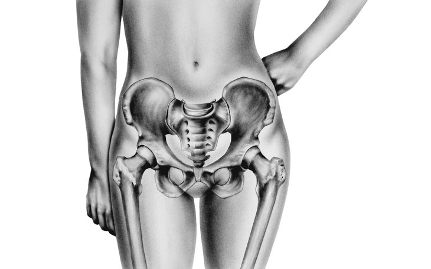
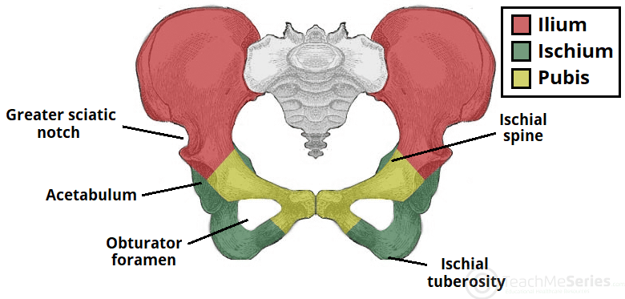
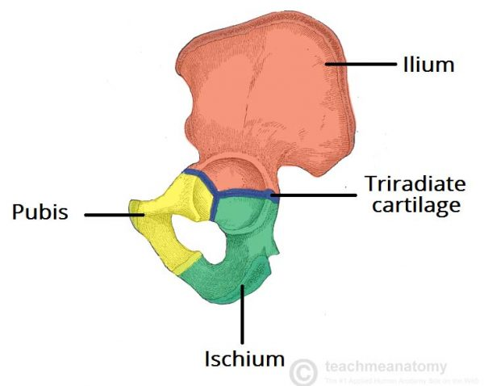
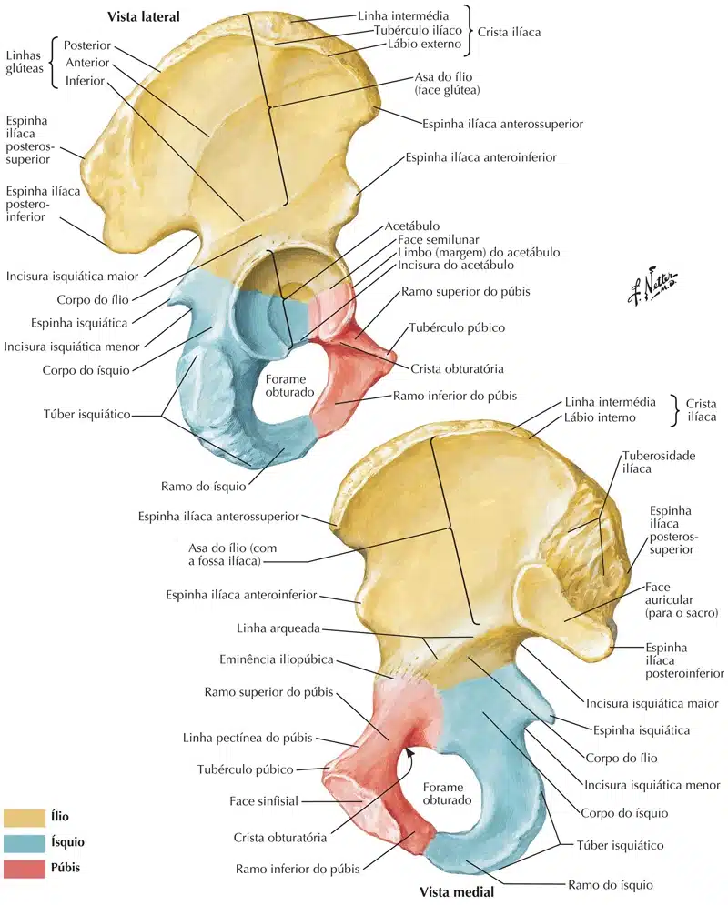

Os ossos da pelve se unem anteriormente na sínfise púbica e posteriormente com o sacro.
O osso da pelve é do tipo plano e suas funções incluem as de movimento (participa das articulações com o sacro e o fêmur), de defesa (protege os órgãos pélvicos), e de sustentação (transmite aos membros inferiores o peso de todos os segmentos do corpo situados acima dele).

Em razão destas múltiplas funções o osso do quadril tem uma estrutura complexa e sua formação envolve três ossos isolados: o ílio, o ísquio e o púbis.
Observe que estas três peças ósseas se unem na região onde mais se faz sentir o peso suportado pelo osso do quadril, isto é, no centro do acetábulo, fossa articular que recebe a cabeça do fêmur.
Assim, é neste ponto que se dá a união entre o esqueleto apendicular do membro inferior e a cintura pélvica.
No homem, até a puberdade as três peças ósseas que constituem o osso da pelve permanecem unidas umas às outras por cartilagem; a partir desta época dá-se a ossificação da cartilagem e o osso do quadril passa a ser único, embora se conserve as denominações das peças ósseas que o constituem originalmente.

https://teachmeanatomy.info/

https://teachmeanatomy.info/
Observe o osso do quadril visto lateralmente e localize o acetábulo, fossa articular que recebe a cabeça do fêmur.
A parede desta cavidade é interrompida, inferiormente, pela incisura do acetábulo.
Note que no acetábulo é possível distinguir uma porção lisa em forma de ferradura, a face semilunar, e outra, situada entre os ramos da ferradura, rebaixada, a fossa do acetábulo, contínua com a incisura do acetábulo.
A cabeça do fêmur desliza na face semilunar, sendo esta, portanto, a porção articular do acetábulo.
Inferiormente ao acetábulo vê-se uma grande abertura, o forame obturado, assim denominado porque no vivente ele é fechado, exceto numa pequena porção superior, pela membrana obturadora.

NETTER: Frank H. Netter Atlas De Anatomia Humana. 7 ed. Rio de Janeiro, Elsevier, 2021.
Ílio
São os principais acidentes do osso ílio:
Asa ilíaca – Superfície glútea e Fossa ilíaca;
Face glútea da asa do ílio;
Linhas glúteas posterior, anterior e inferior;
Crista ilíaca;
Espinhas ilíacas ântero-superior e ântero-inferior;
Espinhas ilíacas póstero-superior e póstero-inferior;
Tuberosidade ilíaca;
Corpo do ílio;
Linha arqueada;
Face auricular.
NETTER: Frank H. Netter Atlas De Anatomia Humana. 7 ed. Rio de Janeiro, Elsevier, 2021.
Ísquio
São os principais acidentes do osso ísquio:
Incisura isquiática maior e menor.
Corpo do ísquio;
Espinha isquiática;
Tuberosidade isquiática;
Ramo do ísquio.
NETTER: Frank H. Netter Atlas De Anatomia Humana. 7 ed. Rio de Janeiro, Elsevier, 2021.
Púbis
São os principais acidentes do osso púbis:
Ramo superior e inferior do púbis;
Linha pectínea;
Tubérculo púbico;
Sínfise púbica (articulação).
NETTER: Frank H. Netter Atlas De Anatomia Humana. 7 ed. Rio de Janeiro, Elsevier, 2021.